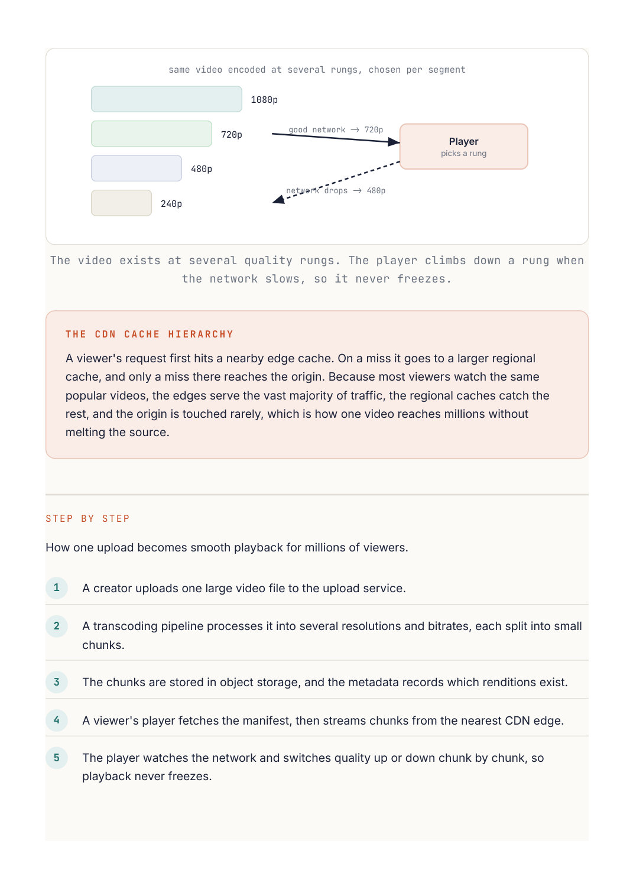

System Design
Chapter 33
Design: YouTube
Streaming video is a storage and delivery problem far more than a compute one. A creator uploads one enormous file, and millions of viewers on different devices and wildly different network speeds all need it to play smoothly. Two ideas carry the design: transcoding and a CDN.
Requirements
Upload a video, process it, store it, and stream it to many devices at many quality levels, with a fast start and no buffering. Reads (views) vastly outnumber writes (uploads), and the files are huge, which pushes everything toward storage and delivery rather than databases.
Upload and process Transcode Creator Upload svc Object storage many bitrates edge pulls Watch Metadata Viewer CDN video info stream manifest One upload is transcoded into many qualities and stored, then streamed from a nearby CDN edge.
The key decisions
The core trick is adaptive bitrate streaming. On upload, the video is transcoded once into many resolutions and bitrates, and split into small chunks. The player then switches quality on the fly based on the viewer's current bandwidth, which is why a weak connection drops to blurry instead of freezing. Doing this heavy work upfront, at upload time, keeps playback cheap and smooth for everyone afterward.
The stored chunks live in object storage and are served through a CDN, so almost every viewer streams from a nearby edge rather than the origin across the world. This is what makes start times fast and keeps the origin from melting. The database only holds small records like the title, view count, and the list of available renditions. The heavy bytes never touch it.
PROS CONS Transcoding once upfront makes every Transcoding into many formats is later view smooth and cheap expensive compute per upload A CDN gives low latency starts and Storing every rendition multiplies offloads the origin storage for popular videos Chunking lets the player adapt quality Keeping global CDN caches warm and and resume instantly fresh adds complexity
W H Y T H E V I D E O G E T S B L U R R Y I N S T E A D O F F R E E Z I N G
Because the same video exists at several bitrates and is cut into short chunks, the player measures your bandwidth chunk by chunk and requests a lower quality version when the network slows down. You keep watching without a pause, just at lower resolution, and it jumps back up when your connection recovers. That is adaptive bitrate streaming in action.
Going Deeper
Adaptive bitrate, segment by segment
On upload, the video is transcoded into a ladder of versions at different resolutions and bitrates, and each version is cut into short segments of a few seconds. The player fetches a manifest that lists the ladder, then requests one segment at a time while measuring your bandwidth as it goes. When the network slows it steps down to a lower rung for the next segment, and steps back up when it recovers, so playback keeps flowing smoothly instead of freezing. The segments are cached in a hierarchy, edge first and origin last, so popular videos are served close to viewers.

The video exists at several quality rungs. The player climbs down a rung when A viewer's request first hits a nearby edge cache. On a miss it goes to a larger regional cache, and only a miss there reaches the origin. Because most viewers watch the same popular videos, the edges serve the vast majority of traffic, the regional caches catch the rest, and the origin is touched rarely, which is how one video reaches millions without How one upload becomes smooth playback for millions of viewers. A creator uploads one large video file to the upload service. A transcoding pipeline processes it into several resolutions and bitrates, each split into small The chunks are stored in object storage, and the metadata records which renditions exist. A viewer's player fetches the manifest, then streams chunks from the nearest CDN edge. The player watches the network and switches quality up or down chunk by chunk, so